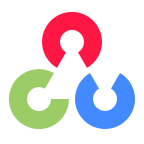
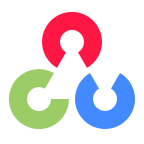

안녕하세요.
설득하는 개발자 남영빈입니다.
MFC | WPF | WEB
인공지능을 활용한 각종 프로젝트와 실제 협업으로 다양한 활동을 경험한 신입 개발자입니다.
반도체 등, 다양한 공정의 비전 검사와 윈도우 TCP/IP 프로그램 개발에 많은 관심을 가지고 있습니다.
주로 팀장을 맡으며 팀원들과 원활한 커뮤니케이션과 설득력을 바탕으로 프로젝트를 이끌었습니다.
ABOUT ME
다양한 팀 프로젝트에서 리더십을 발휘하며 설득력 있는 커뮤니케이션과 책임감을 바탕으로 성과를 창출해온 개발자입니다.
아이디어 도출부터 주도적인 일처리까지, 프로젝트의 전 과정에서 팀을 이끌며 각종 대회 수상과 실제 기업 생산 라인 기여 경험을 쌓았습니다.
Interview
Q. 조직 생활에서 가장 중요한 것은?
책임감과 업무파악입니다. 맡은 일은 반드시 기한 내에 맞추고, 업무를 정확히 파악해서 새로운 아이디어와 발전 가능성을 제시하여
조직에 기여하는 것이 중요합니다.
Q. 의사소통 방식에 대하여
다양한 팀 프로젝트의 리더로서 팀원들과의 원활한 협업을 바탕으로 업무를 체계적으로 분배하고, 설득력 있는 발표와 정확한 보고를 통해
각종 대회 입상, 학교 대표팀 선정, 대기업 생산 라인 프로그램 기여라는 실질적 성과를 창출했습니다.
Q. 직무 적합성에 대하여
반도체 및 제조업 분야의 비전 검사 시스템 개발에 깊은 관심을 가지고 있으며, MFC/WPF 프레임워크와 TCP/IP 통신 기술을 활용한 윈도우 기반 프로그램
개발 경험을 보유하고 있습니다. 광학 이론에 대한 이해를 바탕으로 문제 상황에서 주도적으로 해결책을 모색하고 실행하는 것이 저의 강점입니다.
SKILLS
Programming Languages
JAVA
PYTHON
C#
C++
Framework
.NET Blazor
WPF
MFC
Vision Inspection
Cognex
Halcon
Network & Database
TCP/IP
MongoDB
Development Tools
Visual Studio
PyCharm
VSCode
Certifications
일본어 JLPT 2급 (2020)
정보처리기사
(필기합격(2025), 실기 응시 예정(2025))
ARCHIVING
PROJECTS
Ai를 활용한 영상요약 동영상 플랫폼
AI모델을 활용하여 영상의 핵심 내용을 파악하고 중요한 장면들을 추출해 재생 시간을 단축하는 영상요약 시스템을 개발했습니다. BLIP모델과 자연어 처리 모델 등 6가지 AI 모델을 활용하여 정확한 요약 기능과 사용자 친화적인 플랫폼을 구현했습니다.
 

산업용 중계기 통신 프로그램
인디케이터(AI-850, MODBUS-TCP)와 PLC(XGT 서버) 간의 실시간 데이터 중계를 담당하는 산업용 통신 프로그램을 개발했습니다. 최대 30개의 인디케이터를 동시에 관리하며, 측정값 전송, 영점 명령 처리, 오류 상태 모니터링 등의 핵심 기능을 구현했습니다. 자동 재연결, 하트비트 신호, 로깅 시스템을 통해 안정적인 24시간 무인 운영이 가능하도록 설계했습니다.
HI6 현대로봇 PC제어 프로그램
현대로보틱스 HI6 Open API를 활용하여 산업용 로봇을 PC에서 직접 제어할 수 있는 프로그램을 개발했습니다. 기존 터치 펜던트 없이도 데드맨 스위치, 모터 제어, 시험 기동 등 로봇의 핵심 기능들을 PC 인터페이스를 통해 안전하고 직관적으로 조작할 수 있도록 구현했습니다.
가상 Wafer 이미지 Align 프로그램
OpenCV를 활용하여 반도체 웨이퍼 이미지의 자동 정렬 시스템을 개발했습니다. 가상의 웨이퍼 이미지를 랜덤한 크기, 위치, 각도로 생성한 후 컴퓨터 비전 기술을 통해 원래 위치로 정확히 복원하는 알고리즘을 구현했습니다. 정렬 과정에서 생성되는 모든 데이터와 결과값은 MongoDB에 체계적으로 저장하여 성능 관리가 가능하도록 설계했습니다.
Wafer Defect 검출 딥러닝 비교 연구
Halcon DeepLearning Tool과 Cognex VisionPro Deep Learning을 활용하여 반도체 웨이퍼 결함 검출 성능을 비교 분석한 연구 프로젝트입니다. 정상 이미지 5장과 이상 이미지 39장(Large/Middle/Small 유형)을 사용하여 비지도 학습을 진행했습니다. 히트맵 분석을 통해 각 툴의 검출 정확도와 구조적 한계를 파악하고, 비슷한 색상, 미세 픽셀, 투명 결함 등 다양한 변수 상황에서의 성능 차이를 분석했습니다.
Hansolution 기업 웹사이트 개발
.NET Blazor 프레임워크를 활용하여 Hansolution의 반응형 기업 웹사이트를 개발했습니다. 모바일 환경에 최적화된 UI/UX를 구현하고, MongoDB 연동을 통한 제품 관리 시스템을 구축했습니다. 자동 슬라이드 배너, 카테고리별 제품 진열(파트당 3개씩), 암호화된 이미지 업로드 기능을 통해 시각적 효과와 보안성을 동시에 확보했습니다. 관리자 페이지를 통해 제품 정보를 쉽게 등록하고 관리할 수 있도록 하여 운영 효율성을 크게 향상시켰습니다.
CAREER
경력사항을 여기에 추가해주세요.